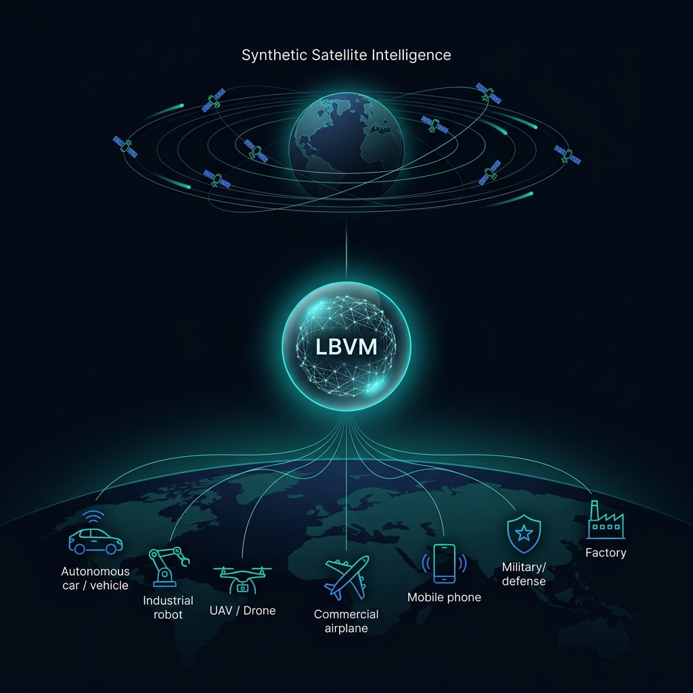

Autonomous Vehicles
Self-driving systems trained on guided synthetic overhead views develop richer spatial priors — understanding road topology, intersection geometry, and terrain from perspectives grounded in real satellite observations.
We build the Large Bio-Vision Model — a world model that learns from real satellites, CCTV, and ground sensors, then generates guided synthetic satellite imagery to train the AI inside every robot, vehicle, drone, and device on the planet.
Every intelligent machine on Earth — every autonomous car navigating an intersection, every delivery robot crossing a sidewalk, every drone surveying a pipeline, every fighter jet reading terrain — depends on spatial understanding from above. Today, that understanding comes from real satellite imagery: expensive, infrequent, weather-dependent, and scarce.
Our approach is fundamentally different from random generative models. The LBVM learns from actual Earth observations — real satellite passes, CCTV feeds, drone surveys, ground-level telematics — and uses that learned understanding to synthesize new perspectives that are physically consistent and contextually accurate. Every synthetic image is grounded in reality: guided by sensor data, constrained by physics, and validated against known ground truth.
This is the principle of guided synthesis. We do not hallucinate terrain — we extend what real sensors have observed into viewpoints, times, conditions, and spectral bands that no single satellite captured. The result is training data for AI models that is orders of magnitude richer than any real dataset, yet rooted in actual observation. As we scale toward our own satellite constellation, the loop tightens: more real data feeds better synthesis, better synthesis trains better ground-level AI, and the intelligence compounds.
Unlike diffusion models that generate from noise, the LBVM synthesizes from observation. Real satellite passes, CCTV feeds, and sensor telemetry anchor every generated view. The synthesis extends coverage — filling temporal gaps, weather occlusions, and resolution limits — while remaining physically grounded in what was actually seen.
An autonomous vehicle does not need to launch a satellite — it needs to think like one. Guided synthetic imagery pre-trains spatial reasoning into AI models so that a robot in a warehouse, a drone over a farm, or a car on a highway understands the world from a perspective it has never physically seen.
The LBVM is a Joint Embedding Predictive Architecture that learns latent representations of the physical world — not by reconstructing pixels, but by predicting what comes next in representation space. It ingests every sensor modality: satellite, CCTV, drone, mobile, telematics, text, and architectural layout.
The Large Bio-Vision Model sits between orbital observation and terrestrial action. It ingests real observations from satellites, ground sensors, and connected cameras — learns the latent structure of the physical world — then generates guided synthetic imagery that any downstream AI system can train against, fine-tune on, or embed into its own decision loop. As we move toward deploying our own satellite constellation, this feedback loop between real observation and synthetic generation becomes the foundation for persistent, planetary-scale intelligence.

Guided synthetic satellite imagery is the training signal that gives downstream AI systems an understanding of space, context, and change they could never acquire from ground-level data alone. These are the machines that inherit the view from above.
Self-driving systems trained on guided synthetic overhead views develop richer spatial priors — understanding road topology, intersection geometry, and terrain from perspectives grounded in real satellite observations.
Delivery robots, warehouse bots, and industrial arms gain spatial awareness beyond their sensors — understanding facility layout and terrain context from synthetic orbital pretraining anchored in real observation.
Drones surveying pipelines, farmland, or disaster zones navigate with pre-trained models that already know the terrain — because they were trained on synthetic views guided by actual satellite passes of the area.
Commercial and military aircraft benefit from synthetic terrain awareness for approach planning and situational understanding — especially in GPS-denied or low-visibility environments.
Guided synthetic imagery provides training data for classifying installations, detecting change, and maintaining persistent surveillance awareness — without depending on tasked real satellite passes.
Smartphones and edge devices run lightweight models distilled from the LBVM — enabling on-device spatial reasoning for navigation, AR, environmental sensing, and location intelligence.
Factory automation systems use synthetic aerial views — grounded in real site imagery — to understand facility topology, monitor changes, optimize logistics, and detect structural anomalies.
Precision agriculture models trained on guided synthetic multispectral imagery monitor crop health, predict yield, track deforestation, and detect environmental change at planetary scale.
Satellites, CCTV, drones, mobile cameras, internal files, telematics, architectural layouts — ingest through API or Model Context Protocol (MCP).
No SQL. No GIS expertise. Ask "What changed in sector 7 this week?" or "Show me anomalies near the eastern perimeter" — the LBVM reasons over your data.
The model does not just describe — it forecasts. JEPA-based prediction produces future-state estimates, anomaly alerts, and trajectory projections before events occur.
geo.qa is the interface to the Large Bio-Vision Model. Connect real sensors. Generate guided synthetic imagery. Train ground-level AI. Query any place on Earth.